Abstract
Каспийский тюлень — пагофильный вид ластоногих, использующий морской лёд, прежде всего, для размножения, включая спаривание и лактацию, а также для отдыха в зимний период. Продолжительность ледового сезона, особенно с момента появления детенышей, определяет выживаемость бельков. Поэтому оценки сроков появления и исчезновения льда на различных участках акватории Каспийского моря дополняют набор параметров, используемых для оценки благополучия популяции каспийского тюленя, а применение многолетних рядов данных позволяет осуществлять мониторинг ледовых местообитаний.
В связи с этим в данной работе рассмотрена возможность применения набора данных по ледовой фенологии озёр северного полушария “Daily Lake Ice Phenology Time Series Derived from AMSR-E and AMSR2” Национального центра данных по льду и снегу (США) для построения многолетних карт сроков появления и исчезновения льда Каспийского моря за период с 2002 по 2022 гг. Для оценки сроков ледовой фенологии применена унимодальная изотоническая регрессия временных рядов сплоченности морского льда, выделенной из ледовых категорий, с предварительной пространственно-временной аппроксимацией пропусков исходных данных. Для верификации использовались фенокарты, построенные тем же методом, по данным ретроспективного анализа поверхностных океанографических данных MERRA-2 и по данным сплоченности морского льда в ежедневной оценке глобальной температуры поверхности моря на основе спутниковых наблюдений.
Ежегодно, в среднем, 63 тыс. км2 (стандартное отклонение 16 тыс. км2) Каспийского моря покрывается льдом не менее чем на 6 дней. Больше всего такого льда было зимой 2005/2006 гг., 81 тыс. км2, а меньше всего – зимой 2019/2020 гг., 23 тыс. км2. Тенденция изменения этой площади составляет -1.0±0.6 тыс. км2 год-1 с умеренной статистической значимостью 90%. За период наблюдений с зимы 2002/2003 по зиму 2021/2022 гг. площадь замерзающей акватории Каспия сократилась на 27% с 73 до 53 тыс. км2. Возможная недооценка этого параметра связана с пропуском в исходных данных.
Ледообразование на обычно замерзающей (не менее 9 раз за 10 лет) акватории Каспия происходит, в среднем, 15 декабря (стандартное отклонение 14 дней). Экстремальные значения наблюдались для зим 2020/2021 гг., 23 ноября, и 2010/2011 гг., 07 января. За многолетний период наблюдений отмечается всё более раннее появление льда (-1.0±0.5 дней год-1, S=94%), с 25 декабря зимой 2002/2003 гг. до 06 декабря зимой 2021/2022 гг.
В среднем, обычно замерзающая акватория Каспийского моря освобождается ото льда 11 марта (стандартное отклонение 14 дней). Наиболее раннее ледотаяние наблюдалось зимой 2019/2020 г., 05 февраля, а наиболее позднее – зимой 2002/2003 г., 01 апреля. За сезоны с 2002/2003 по 2021/2022 гг. отмечается статистически значимая (S=97%) линейная тенденция более раннего исчезновения льда со скоростью 1.1±0.5 дней год-1, с 21 марта в начале исследуемого периода до 28 февраля в конце.
Продолжительность ледового сезона обычно замерзающей акватории Каспийского моря составляет, в среднем, 86 дней (стандартное отклонение 19 дней). По покрытию льдом наиболее долгой была зима 2002/2003 гг., 118 дней, а наиболее короткой – зима 2021/2022 гг., 44 дня. Линейная тенденция изменения длительности ледового периода не обнаруживается (-0.2±0.8 дней год-1, S=16%).
Ледообразование в северном Каспии задерживается при повышении осенних температур воздуха над Прикаспийской низменностью в начале зимы. Раннее таяние каспийского льда связано с более высокой температурой воздуха преимущественно над средним Каспием. Льда в Каспийском море, как правило, образуется больше, если над западным Каспием и прилегающей территорией в декабре-январе воздух более холодный.


Каспийский тюлень
Локальный климат
Хозяйственная деятельность
Единицы измерения – даты, дни с начала года
Сроки появления льда:
Образование льда
Импорт полей льда
Сроки исчезновения льда:
Таяние льда
Экспорт полей льда
Pros:
Ежедневные ледовые карты на протяжении нескольких месяцев отображаются на одной карте
Карта оценки продолжительности ледового сезона в единицах «дни», «недели».
Cons:
Сплоченность льда или категории ледового покрова исходных данных теряются.
Неоднозначность использования параметров с единицами «дата» предикторами в математических моделях.
Оценить пространственно-временную динамику ледовой фенологии Каспийского моря
Оценить эффективность полученных результатов
Выявить и обосновать причины изменений фенологических характеристик
Временной ряд ежедневных явлений ледового покрова озер на основе данных AMSR-E and AMSR2 (Du et al., 2017) из NSIDC.
Преобразование из номинальной шкалы (категории льда) в интервальную (сплоченность льда)
Заполнение пропусков в данных
Пространственная экстраполяция1
Временна́я экстраполяция
Выделение района исследований (постобработка)

Номинальная шкала (категории льда)
Ср. с интервальной шкалой (сплоченность льда).

Интервальная шкала (сплоченность льда)
Ср. с номинальной шкалой (категории льда).
Применение унимодальной изотонической регрессии (Turner and Wollan, 1997) для аппроксимации временно́го ряда сплоченности морского льда.
Предшественник:

🢤
Контур - даты
Растр - скорость движения кромки льда, км/день
Вектор - направление движения кромки льда
Сценарии аппроксимации временны́х рядов
Мода (холм) – район краткосрочного присутствия льда (обычно для Каспийского моря)
Неубывающая функция с двумя плато – период образования льда
Невозрастающая функция с двумя плато – период исчезновения льда
Инвертированная мода (впадина) – район краткосрочного периода открытой воды (не для Каспийского моря)
Оценка сроков:
Оценка качества:
Выбор сценария:
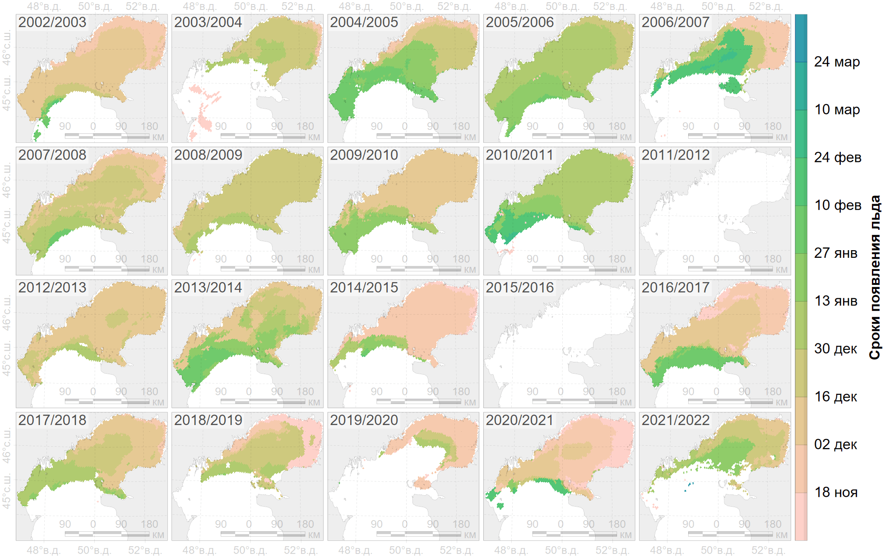

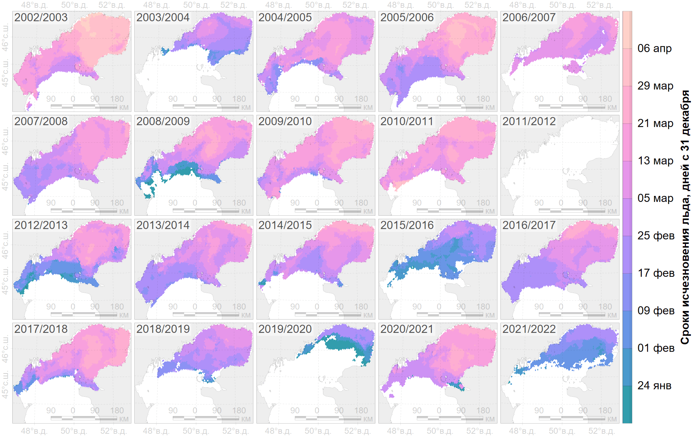
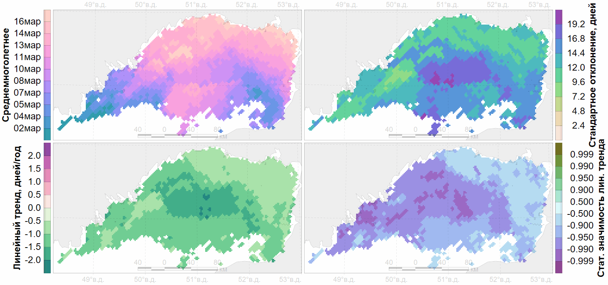
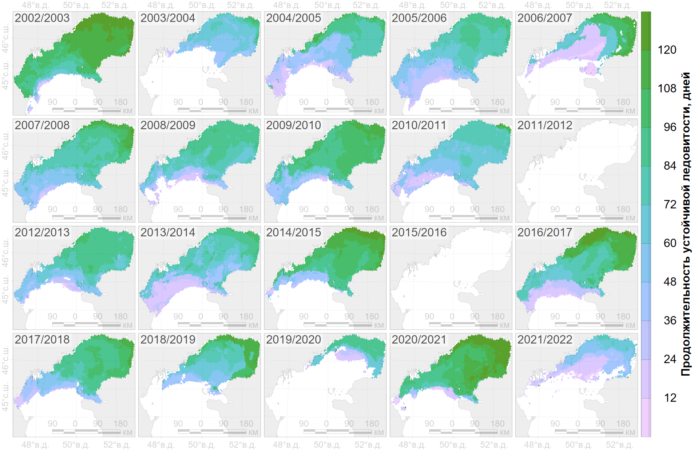
По фенокартам появления и исчезновения льда.
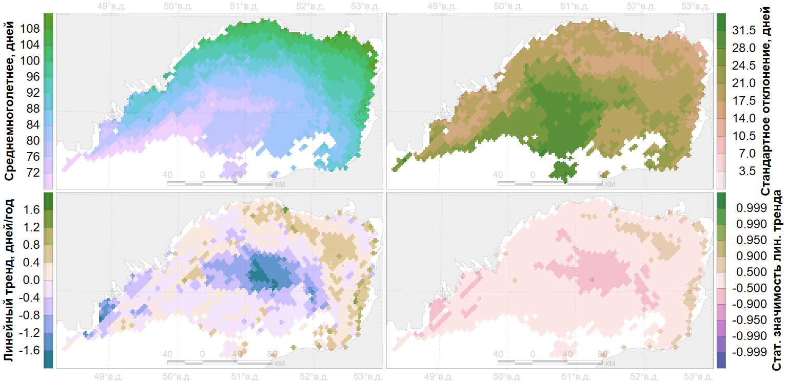
Данные ретроспективного анализа поверхностных океанографических данных MERRA-2 (Global Modeling And Assimilation Office, 2015)
Пространственное разрешение: 0.500° × 0.625°
Временное разрешение: 1 час
Временной охват: с 01 января 1980 г. по 02 октября 2024 г.
Данные сплоченности морского льда в ежедневной оценке глобальной температуры поверхности моря на основе спутниковых наблюдений (Lopez, 2019)
Пространственное разрешение 0.05° × 0.05°
Временное разрешение: 1 сутки
Временной охват: с 1981 по 2022 гг.
это исследование (Du et al., 2017)
Пространственное разрешение 5км × 5км
Временное разрешение: 1 сутки
Временной охват: 2002-06-06 - 2011-10-03, 2012-07-24 - 2022-12-31

| data | min | max | avg | slope | obs |
|---|---|---|---|---|---|
| PM | 23Nov (2020) | 07Jan (2010) | 15Dec±13.7 | -1.0±0.5 (S=0.94) | 20 (2002-2021) |
| MERRA2 | 25Nov (2020) | 01Feb (2002) | 28Dec±19.9 | -2.5±0.5 (S>0.999) | 20 (2002-2021) |
| VIR | 24Nov (2020) | 02Jan (2010) | 14Dec±11.5 | -1.0±0.4 (S=0.97) | 20 (2002-2021) |
| MERRA2 | 25Nov (2020) | 15Mar (1984) | 10Jan±24.8 | -1.5±0.2 (S>0.999) | 44 (1980-2023) |
| VIR | 14Nov (1993) | 02Jan (2010) | 12Dec±11.2 | +0.1±0.2 (S=0.40) | 40 (1982-2021) |

\(\rho\)(VIR, PM)=0.9691

| data | min | max | avg | slope | obs |
|---|---|---|---|---|---|
| PM | 05Feb (2020) | 01Apr (2003) | 11Mar±13.5 | -1.1±0.5 (S=0.97) | 20 (2003-2022) |
| MERRA2 | 22Feb (2020) | 26Mar (2021) | 09Mar±8.6 | +0.0±0.3 (S=0.10) | 20 (2003-2022) |
| VIR | 19Feb (2022) | 30Mar (2003) | 14Mar±11.1 | -0.7±0.4 (S=0.91) | 20 (2003-2022) |
| MERRA2 | 19Feb (2000) | 03Apr (1985) | 13Mar±11.3 | -0.4±0.1 (S>0.99) | 45 (1980-2024) |
| VIR | 16Feb (2000) | 01Apr (2012) | 16Mar±11.9 | -0.4±0.1 (S=0.99) | 41 (1982-2022) |

\(\rho\)(VIR, PM)=0.9712

| data | min | max | avg | slope | obs |
|---|---|---|---|---|---|
| PM | 44 (2022) | 118 (2003) | 86±19 | -0.2±0.8 (S=0.16) | 20 (2003-2022) |
| MERRA2 | 39 (2003) | 121 (2021) | 72±22 | +2.6±0.6 (S>0.999) | 20 (2003-2022) |
| VIR | 61 (2022) | 121 (2021) | 91±16 | +0.2±0.6 (S=0.26) | 20 (2003-2022) |
| MERRA2 | 19 (1985) | 121 (2021) | 62±24 | +1.1±0.2 (S>0.999) | 44 (1981-2024) |
| VIR | 61 (2022) | 137 (1994) | 96±18 | -0.4±0.2 (S=0.89) | 40 (1983-2022) |

\(\rho\)(VIR, PM)=0.9776

| data | min | max | avg | slope | obs |
|---|---|---|---|---|---|
| PM | 23 (2020) | 81 (2006) | 63±16 | -1.0±0.6 (S=0.90) | 20 (2003-2022) |
| MERRA2 | 35 (2004) | 79 (2017) | 58±13 | +1.4±0.4 (S>0.99) | 20 (2003-2022) |
| VIR | 53 (2004) | 81 (2006) | 72±8 | -0.2±0.3 (S=0.43) | 20 (2003-2022) |
| MERRA2 | 35 (2004) | 79 (2017) | 62±12 | -0.1±0.2 (S=0.37) | 44 (1981-2024) |
| VIR | 53 (2004) | 82 (2012) | 74±7 | -0.2±0.1 (S=0.92) | 40 (1983-2022) |

\(\rho\)(VIR, PM)=0.9415
Пространственные данные
Температура воздуха (Global Modeling And Assimilation Office, 2015)
Скорость меридианного и зонального ветра (Global Modeling And Assimilation Office, 2015)
Температура воды (Lopez, 2019)
Точечные данные:
Регрессионный анализ сводных характеристик
Корреляционный анализ региональных связей
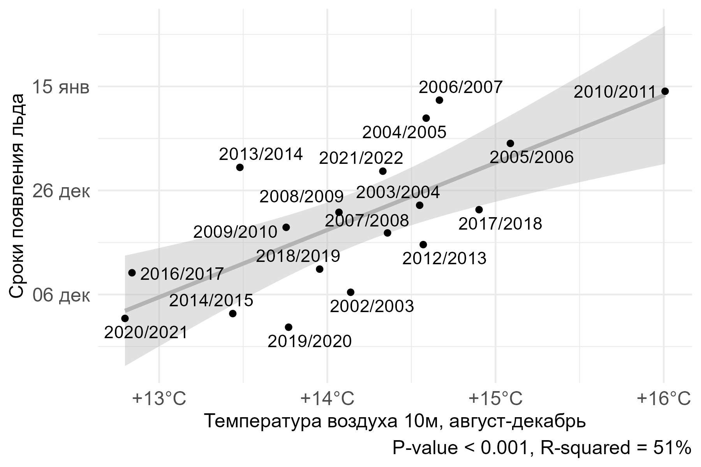
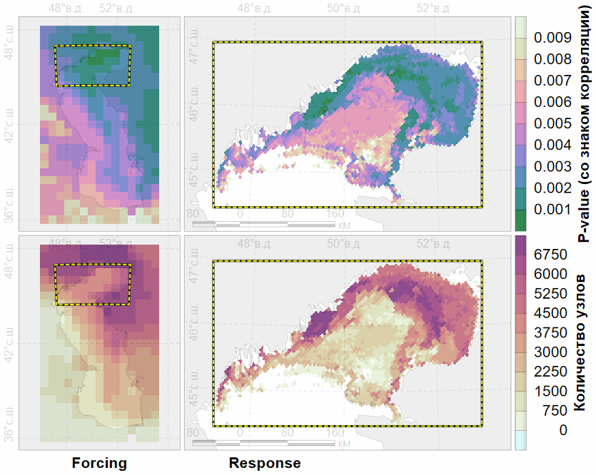
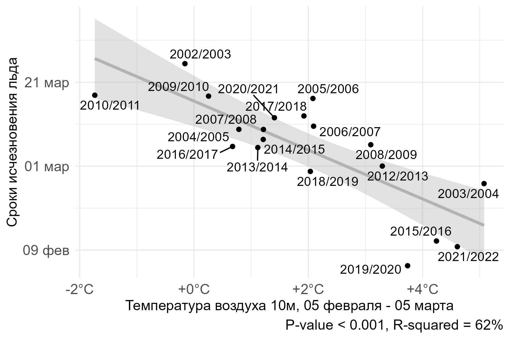
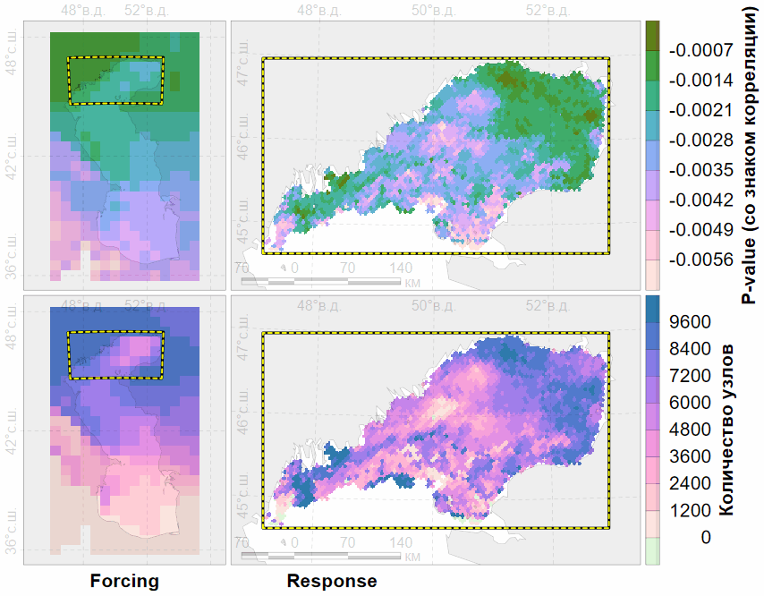
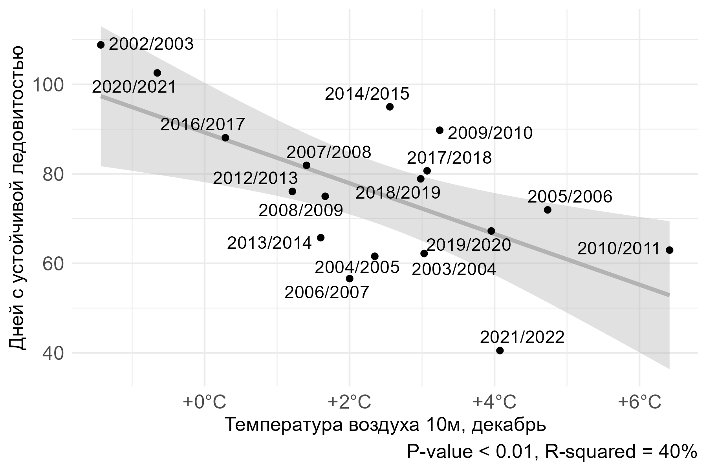
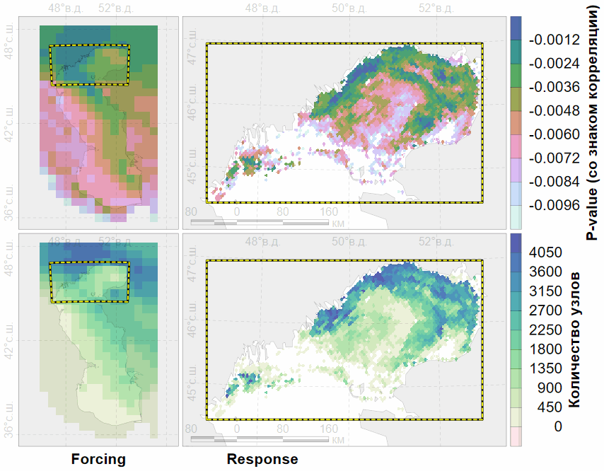
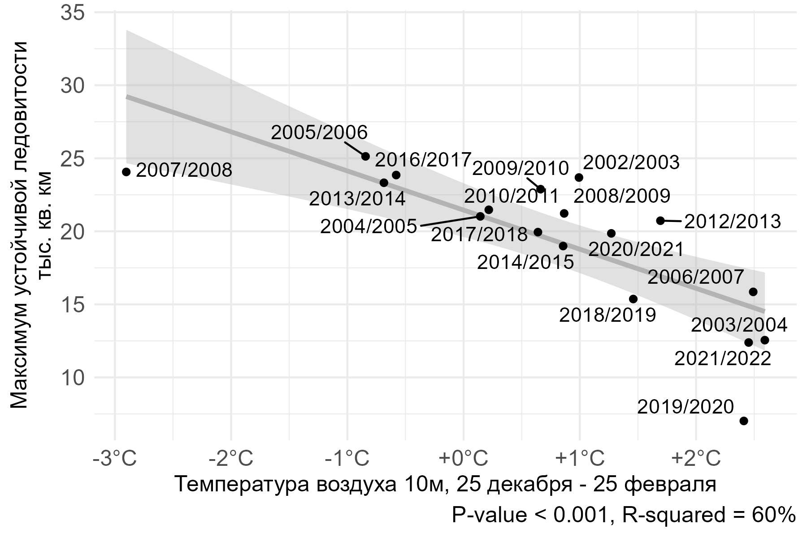
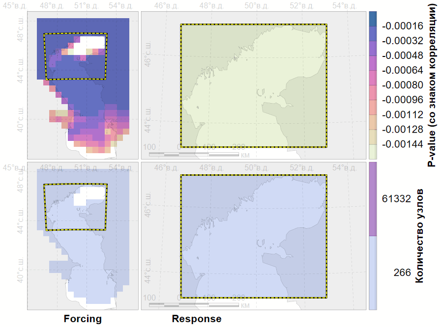
Ежесуточные данные по ледовому покрытия Каспийского моря за последние две декады либо имеют очень низкое пространственное разрешение, либо не доступны в режиме реального времени.
Ледовые фенокарты на основе оценок ледового покрова со спутниковых измерениях пассивного микроволнового зондирования в сравнении с видимым и инфракрасным спектром обеспечивают близкие результаты, что может использоваться в ассимиляции продуктов.
Сроки ледообразования и ледотаяния, продолжительность ледового покрова и площадь максимального распространения льдов имеют высокую вариабельность. Статистически значимая тенденция отмечается в уменьшении площади льдов и в более раннем ледотаянии.
Тепловой режим в предшествующий осенний период влияет на смещение сроков ледообразования, тогда как сроки ледотаяния больше зависят от текущих условий прогрева воздуха.
Спасибо за внимание
Соавторам
Организаторам
Участникам
Солнечному Дагестану
Платонов Никита Геннадьевич
с.н.с. ИПЭЭ РАН, к.т.н.
Кабинет методов ДЗЗ и тематического дешифрирования в экологии
Программа изучения белого медведя в российской Арктике
Постоянно действующая экспедиция РАН
В данной работе – не кригинг↩︎